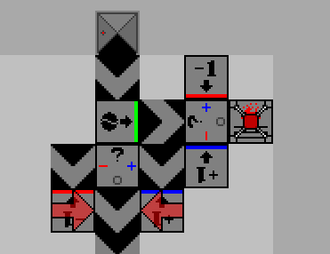

An educational puzzle game exploring turing machines.
This was a Unity C# educational game I conceptualized way back in high school. It allows players to take simple tools and create a turing-machine-like being out of them using programming concepts and logic. With a gradual learning curve, playing the games has helped many of my friends, and thousands of other players, to learn the basics of programming in an interactive way. Special challenges that push the limits of turing machines also are provided for more experienced coders.
The game has many complex features that were fun to implement. Users are able to save and load their own levels to share and improve upon. This was done by serializing the game's state into a short string that could be copy and pasted with ease. Only the most necessary information was stored to save memory. Users are also pitted against each other in a game of efficiency by utilizing API's to keep track of a leaderboard. With this feature, players are inspired to iterate on their designs.
However, the thing that sticks with me the most about this game was the panic and emotion that I felt when I released it. It was the first time I had released one of my creations to the general public, and I quickly became bogged down trying to achieve perfection. As I expected, the game had mixed reviews. Puzzle games tend to be that way, especially challenging ones without fancy graphics. But still, seeing the feedback and constantly updating and fixing imperfections was a valuable experience that revealed troublesome spots I would have never considered myself. For instance, people generally ignored the tutorial, attempted to "fake" their way through some challenges, and other common programmer's pitfalls.
In the end, the game settled in around 3.5 stars out of 5. I was and am still very satisfied with how well the game turned out. I encourage you to try it out. I get no monetary benefit from people playing my game, but as a puzzle fanatic, I like the thought of providing a nice puzzle for someone to enjoy.
Gameplay Example
Gameplay Example
Any questions? Have anything to say? Feel free to contact me.